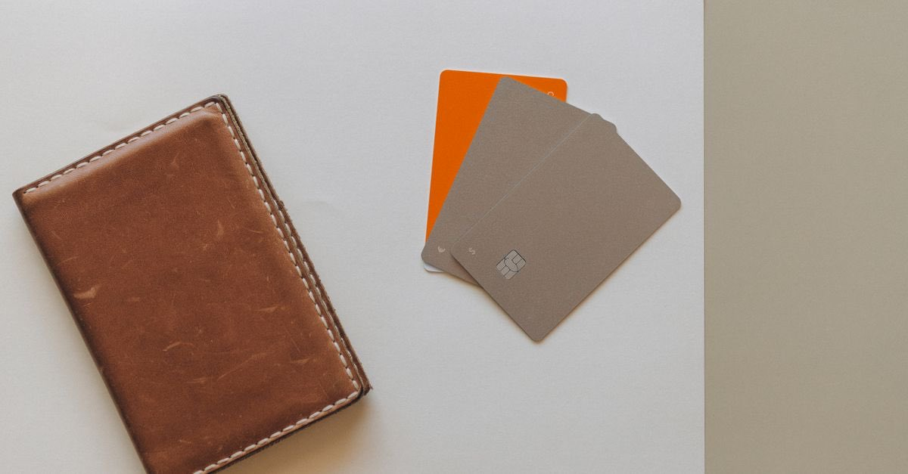
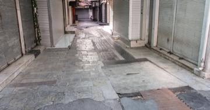

Kredi ve kredi kartı borçları: erteleme bir hak mı, karar mı?
Deprem sonrası borç ertelemeleri kalıcı bir hak değil, düzenleyici kurum kararlarıdır. 2023'te uygulanan esnekliklerin ne olduğunu ve bugün ne yapılabileceğini ayrı ayrı anlatıyoruz.

Deprem sonrasında gelen mesajların en umut vericisi genellikle şudur: "Borçlar ertelendi." Bu cümlenin doğru okunuşu şudur: bir kurum, belirli bir dönem için, belirli borç türlerinde esneklik kararı almış olabilir.
Kalıcı bir hak değildir. Bu yüzden bu sayfada size "hakkınız" demiyoruz; ne olduğunu ve bugün ne yapabileceğinizi anlatıyoruz.
2023'te ne uygulanmıştı?
6 Şubat 2023 sonrasında BDDK kararlarıyla getirilen esneklikler şunlardı:
- Tüketici ve taşıt kredilerinde anapara ve faiz ödemelerinin, **müşterinin talebi
üzerine** en az 6 ay ertelenmesi
- Kredi kartı borçlarında ödemesiz dönem tanımlanabilmesi
- Taksitlendirme sürelerinin bir katına kadar artırılabilmesi
- Kredi kartı yıllık ücreti ve POS aylık ücretlerinin alınmaması
Bunlar kalıcı mevzuat değildir
Yukarıdakiler belirli bir dönem için alınmış kararlardır. Yeni bir afette aynı kararların çıkacağının garantisi yoktur. Bugün için bankanızın ve düzenleyici kurumun güncel duyurusunu esas alın.
Bugün ne yapılabilir?
Karar olsun olmasın, her borçlunun kullanabileceği üç yol vardır:
- Bankaya yazılı başvuru. Durumunuzu (hasar tespit raporu, iş yeri kapanışı, gelir
kaybı) belgeleyerek ödeme planı revizyonu talep edin. Şubede sözlü konuşmak yetmez; başvurunun kaydını alın.
- Yeni plan yazılı istenir. Erteleme kabul edilirse toplam maliyetin ne olacağını
gösteren yeni ödeme planını yazılı isteyin. Erteleme çoğu zaman faizi silmez, öteler.
- Uyarlama talebi. Sözleşmenin kurulmasından sonra ortaya çıkan olağanüstü durum ifayı
aşırı güçleştirmişse, hâkimden sözleşmenin yeni koşullara uyarlanmasını isteme imkânı vardır. Bu bir dava yoludur ve avukatla yürütülmelidir.
İcra takibi ve tebligat
Afet hâllerinde icra takiplerinin durdurulmasına ilişkin kararlar alınabilir; fakat bu kararların kapsamı ve süresi sınırlıdır. Sizin için kritik olan iki şey vardır:
| Konu | Neden kritik |
|---|---|
| Tebligat tarihi | İtiraz süreleri bu tarihten işler; adreste bulunmamak süreyi durdurmaz |
| Adres kaydı | Bina yıkıldıysa bile tebligat kayıtlı adrese yapılabilir |
| İtiraz süresi | Kısa ve hak düşürücüdür; kaçırılırsa takip kesinleşir |
Adresinizi güncelleyin
Binası yıkılan çok sayıda kişi, tebligatların eski adrese yapılması nedeniyle takipten haberdar olamadı. Taşındıysanız adres kaydınızı güncelleyin; bu, para değil zaman maliyeti olan ve en çok işe yarayan adımdır.
Kefil, ortak borçlu ve mirasçı
- Kefil: Asıl borçlunun afetten etkilenmesi kefaleti kendiliğinden sona erdirmez.
Kefil de kendi adına yazılı başvuru yapmalıdır.
- Ortak borçlu: Müşterek borçlulukta alacaklı, borcun tamamını herhangi bir borçludan
isteyebilir.
- Mirasçı: Borç mirasla geçer. Terekenin borca batık olduğunu düşünüyorsanız
mirasın reddi süresi kısadır ve kaçırılırsa borç üstlenilmiş sayılır — mirasın reddi ve tereke.
Ne yapmalı?
- Tüm kredi ve kart borçlarınızı tek listeye çıkarın: kurum, tutar, vade, kefil.
- Her kuruma yazılı başvurun ve kaydını saklayın.
- Erteleme kabul edilirse yeni planı ve toplam maliyeti yazılı isteyin.
- Tebligat adresinizi güncelleyin.
- İcra evrakı geldiyse süreyi hemen not edip barodan destek isteyin.
Kanuni dayanak
| Mevzuat | Ne diyor |
|---|---|
| 5411 sayılı Bankacılık Kanunu | Bankacılık Düzenleme ve Denetleme Kurumunun düzenleme ve karar alma yetkisinin dayanağıdır. |
| 6098 sayılı Türk Borçlar Kanunu m.138 | Aşırı ifa güçlüğü hâlinde hâkimden sözleşmenin yeni koşullara uyarlanmasını isteme imkânı tanır. |
| 2004 sayılı İcra ve İflas Kanunu | Afet hâllerinde icra takiplerinin durdurulmasına ilişkin kararların uygulandığı çerçeveyi kurar. |
Sık sorulanlar
Deprem olunca kredi taksitlerim otomatik ertelenir mi?
Hayır. Erteleme, düzenleyici kurumun o afete ilişkin kararına ve çoğu zaman sizin talebinize bağlıdır. 2023'te tüketici ve taşıt kredilerinde müşterinin talebi üzerine en az 6 ay erteleme yapılabilmesi kararlaştırılmıştır.
Erteleme faizi de siler mi?
Kural olarak hayır. Erteleme ödemeyi öteler; faiz işlemeye devam edebilir ve toplam geri ödeme artabilir. Talep etmeden önce yeni ödeme planını yazılı isteyin.
Kredi kartı borcumda ne yapılabilir?
2023 uygulamasında kredi kartı borçlarında ödemesiz dönem tanımlanabilmesi, taksit sürelerinin bir katına kadar artırılabilmesi ve yıllık kart ücreti ile POS ücretlerinin alınmaması kararlaştırılmıştır. Bunlar o döneme özgü kararlardır.
Hakkımda icra takibi başlatıldı, ne yapmalıyım?
Afet hâllerinde icra ve iflas takiplerinin durdurulmasına ilişkin kararlar alınabilir; ancak bu kararların kapsamı ve süresi sınırlıdır. Takip evrakının tebliğ tarihini kaçırmayın ve süresinde itiraz için mutlaka hukuki destek alın.
Kefiliyim, benim durumum ne olur?
Kefalet, asıl borçlunun afetten etkilenmesiyle kendiliğinden sona ermez. Kefil olarak sizin de bankaya yazılı başvurup ödeme planı talebinde bulunmanız ve sürecin yazılı kaydını tutmanız gerekir.
Bu konuyla ilgili araç
Dilekçe üreticiKurumlara yazılı başvurunuzun kaydını üretin.İlgili rehberler
 Vergi, prim ve borçlar
Deprem sonrası vergi: mücbir sebep, terkin ve yıkılan binanın emlak vergisi
Deprem mücbir sebep hâlidir ve süreler işlemez. Yıkılan bina için emlak vergisi mükellefiyeti ise çoğu zaman bildirime bağlı olarak sona erer.
Vergi, prim ve borçlar
Deprem sonrası vergi: mücbir sebep, terkin ve yıkılan binanın emlak vergisi
Deprem mücbir sebep hâlidir ve süreler işlemez. Yıkılan bina için emlak vergisi mükellefiyeti ise çoğu zaman bildirime bağlı olarak sona erer.

Çalışma hayatı ve iş yeri Deprem işi durdurunca: yarım ücret, haklı fesih ve kısa çalışma Deprem zorlayıcı sebeptir. İş bir haftadan fazla durursa hem işçinin hem işverenin derhal fesih hakkı doğar; duran bir haftaya kadarki süre için işveren yarım ücret öder.